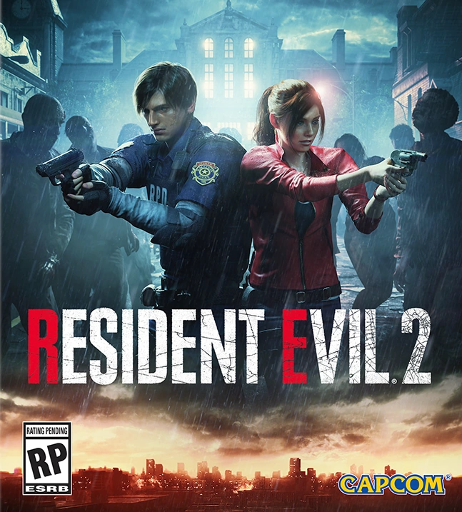

|  |
Сюжет |
Раккун-Сити. В подземной лаборатории корпорации «Umbrella» доктор Уильям Биркин исследует свой новый вирус G и готовится сбежать с ним, чтобы потом продать правительству США. Однако, начальство корпорации узнаёт об этом и посылает свой спецназ для изымания вируса у Доктора. Когда спецназ прибывает в лабораторию, Биркин сопротивляется и один из бойцов убивает его. Отряд берёт чемодан с вирусом и покидает лабораторию. В предсмертной агонии Биркин берёт образец G-вируса и вкалывает его себе. Мутируя, Уильям превращается в ужасного монстра и в таком состоянии догоняет бойцов спецназа в канализации, убивая всех из них. Чемодан открывается, капсулы с вирусом разбиваются и ближайшие крысы разносят заразу по всему городу. Через несколько дней спустя в город, кишащий зомби, приезжают Леон Кеннеди и Клэр Редфилд.